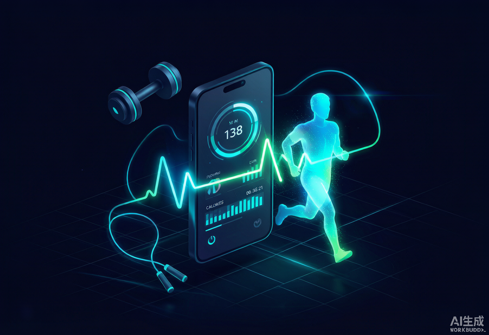
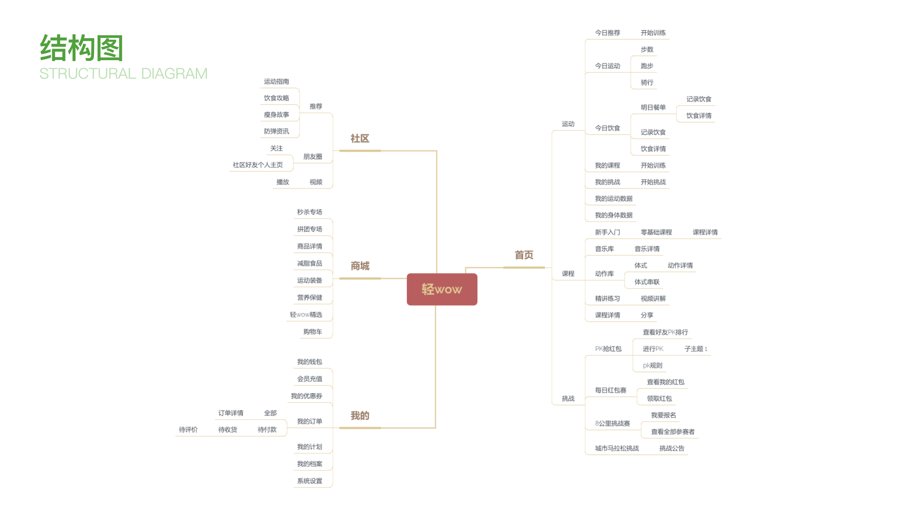
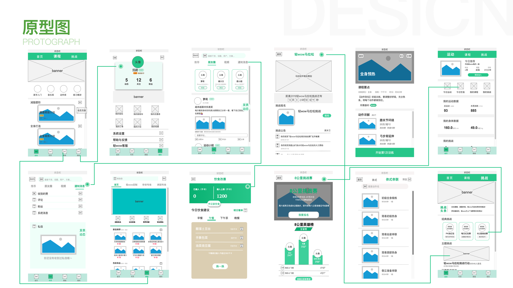
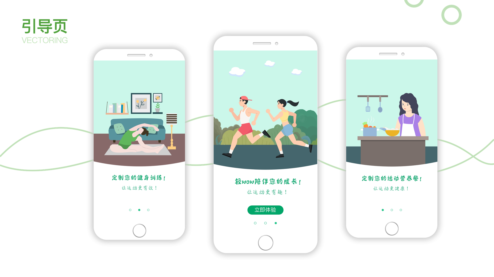
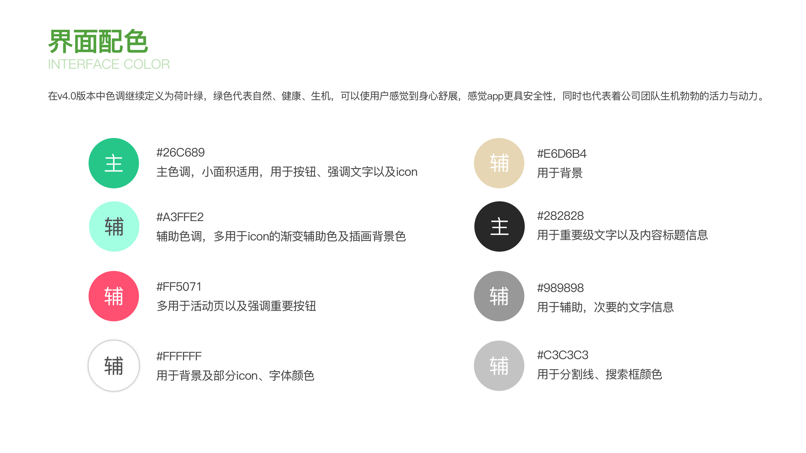
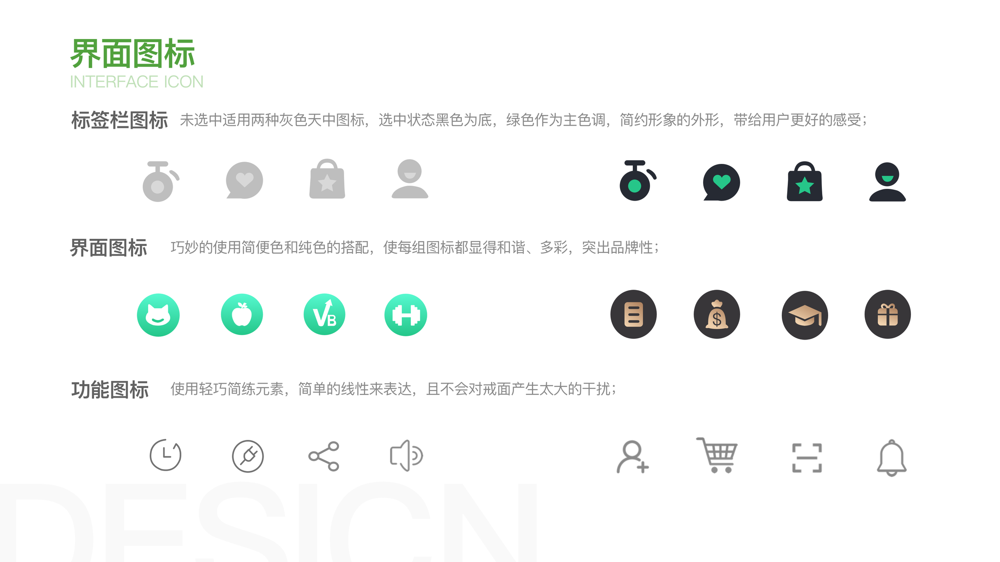

C 端 APP · 健身电商 · UI/UX
轻 WOW运动健身 + 健康消费 一体化生活方式 APP
致力于成为用户的「移动减脂私教 + 运动好物推荐官」。通过精准运动数据追踪、科学饮食方案、社区激励体系和运动电商四大核心能力，帮助用户建立可持续的健康生活习惯——运动还能领「现金红包」，让每一次坚持都有正向反馈。
97.8%计步准确率
4 大核心能力
3 层用户分层运营
闭环运动—饮食—购物—激励
我的角色：产品梳理 · 原型设计 · UI 设计 · 交互定义

— 市场痛点 —
PAIN POINTS
当前运动健身类 APP 普遍存在的四大痛点。
01 · 数据碎片化
健身、跑步、骑行、计步数据分散在不同板块，缺乏全局视图。
“不知道自己今天到底动了多少”02 · 攻略不可靠
运动攻略泛滥、质量参差不齐，难以辨别科学性。
“跟着练了半天，没效果还伤膝盖”03 · 饮食无管控
重运动轻饮食，缺乏配套的饮食指导与能量管理。
“练得再多，一吃就回去了”04 · 坚持成本高
缺乏有效监督与正向激励，用户流失率高。
“下了 APP，三天就放弃了”用户真正需要的是：一款 科学、安全、有监督力，且能在短期内看到切实效果的运动陪伴工具。
— 核心功能 —
CORE FEATURES
01
多模式运动记录
支持步行、跑步、骑行等多种运动模式，计步准确率达 97.8%。
02
个性化饮食管理
根据身高、体重与工作状态定制减脂餐，清晰掌握每日能量收支。
03
运动社区
汇聚热爱运动的同好，发现身边的运动达人，让坚持不再孤单。
04
运动好物商城
精选运动食品、装备与器材，边运动边种草，专业推荐更放心。
产品竞争优势
一站式数据看板
健身、跑步、骑行、计步数据统一聚合，全景呈现每日运动状态，让数据真正指导行动。
科学饮食方案
基于个人数据定制专属减脂餐，清晰呈现每日摄入与消耗，安全可控地管理饮食。
红包激励机制
完成每日运动挑战即可额外获赠红包，运动有回报，坚持更容易。
专业运动电商
结合运动场景推荐食品、装备与器材，运动有消费也有奖励，健康生活方式自然闭环。
— 目标用户 —
TARGET USERS
核心用户20–35 岁
都市白领 / 学生，有减脂塑形需求，注重生活品质。
高效减脂 · 科学指导 · 陪伴激励
潜力用户35–45 岁
职场中坚，开始关注健康管理，有一定消费力。
健康维持 · 专业装备 · 饮食管控
边缘用户45 岁 +
健康意识觉醒，以轻运动为主。
适度运动 · 安全指导
— 设计过程 —
DESIGN PROCESS





— 高保真界面 —
HI-FI SCREENS
核心页面高保真设计稿，点击可放大查看。